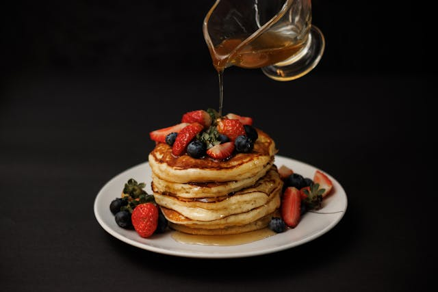

Home
Fluffy Classic Buttermilk Pancakes

Description
This recipe delivers the ultimate American breakfast staple: thick,
incredibly fluffy buttermilk pancakes with a light, airy center and
beautifully golden-brown edges. The secret lies in the reaction between
the acidic buttermilk and the leavening agents, creating tiny air pockets
that expand perfectly on a hot griddle.
Serve these pancakes stacked high with a generous pat of salted butter
melting down the sides. Drizzle liberally with warm, pure maple syrup and
pair with fresh berries or crisp bacon for a picture-perfect morning
feast.
Ingredients
- 2 cups all-purpose flour
- 3 tablespoons sugar
- 2 teaspoons baking powder
- 1 teaspoon baking soda
- 1/2 teaspoon salt
- 2 cups buttermilk
- 2 large eggs
- 1/4 cup unsalted butter, melted and cooled slightly
- 1 teaspoon vanilla extract
- Additional butter or oil for greasing the skillet
Steps
-
In a large bowl, whisk together the flour, sugar, baking powder, baking
soda, and salt.
-
In a separate medium bowl, whisk together the buttermilk, eggs, melted
butter, and vanilla extract until smooth.
-
Pour the wet ingredients into the dry ingredients. Gently fold the
mixture together with a spatula just until combined. The batter should
still be thick and lumpy; do not overmix, or the pancakes will become
dense. Let the batter rest for 5 to 10 minutes.
-
Heat a large nonstick skillet or griddle over medium heat and lightly
coat with a small amount of butter or oil.
-
Pour 1/4 cup of batter onto the hot skillet for each pancake. Cook for 2
to 3 minutes, or until bubbles form on the surface and the edges look
set.
-
Carefully flip the pancakes and cook the other side for another 1 to 2
minutes, until golden brown and cooked through. Repeat with the
remaining batter, adding more butter to the skillet as needed.